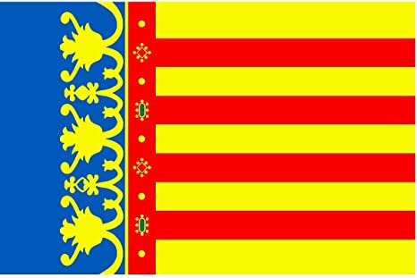
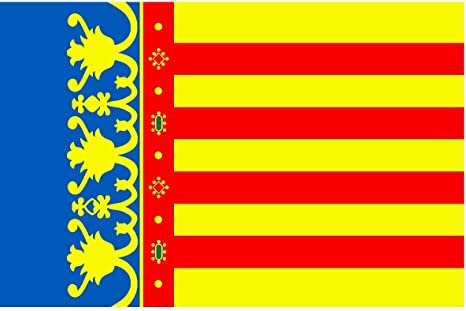

@Cat-Univers
@Cat-Univers 


A l’ombra fresca d’eixa vella alzina,
seguts en terra damunt l’herba espessa,
aquí voldria jo a prop meu trobar-te,
amic de l’ànima.
Aquí, oblidant les mundanals misèries
que el cor rovellen i abans d’hora tornen
blanca la testa, del present alegre
sols parlaríem;
de si aquells núvols que en la serra s’alcen,
i apilotats per el cel blau travessen,
duen la pluja de la terra amiga
o calor i fora;
de les cepades de raïms negrosos
que amb joia mira el bon pagès, i compta
els jorns que manquen fins que al trepitjar-los
sos peus emporprin;
del ca fidel allà ajegut prop nostre,
del vent que inquieta rondinaires canyes...
Després, pel viarany venir veuríem
gentil donzella
ple l’ample càntir d’aigua regalada,
i al demanar-li que ens en deixés beure,
ella, enrogides les molsudes galtes:
«Beveu», diria.
Les disperses
Una estrella cau al prat, una flor s’ha esbadellat, tot belant juga el ramat amb la rossa macaruia.
Al·leluia, cor lassat! Al·leluia, món gebrat! Al·leluia, Déu és nat! Al·leluia!
Cap herbei té tenebror, ni cap deu fa el ploricó; no hi ha fred ni tremolor, que un pas d’ala se n’ho duia.
Al·leluia en tot racó! Al·leluia en tot dolor! Al·leluia al pecador! Al·leluia!
A Betlem van els infants i els amics dant-se les mans i els promesos i els germans i la vella en sa capuia!
Al·leluia, vianants! Al·leluia en nostres cants! Al·leluia, catalans! Al·leluia!
''El rústec villancet''